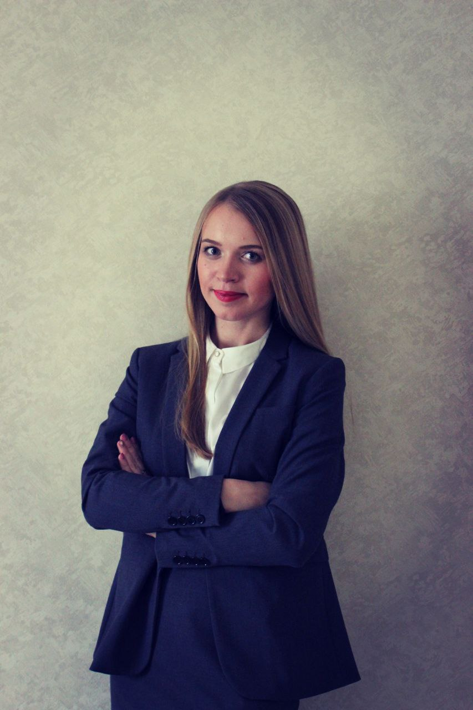

Обо мне
Я — практикующий адвокат с опытом юридической работы более 18 лет. С декабря 2015 года оказываю юридическую помощь в составе коллегии адвокатов, а с 2021 года — в собственном адвокатском кабинете. Моя практика охватывает широкий спектр правовых вопросов как для физических, так и для юридических лиц.
Для физических лиц:
- Консультации (устные и письменные)
- Представительство в государственных органах и судах
- Подготовка исков, жалоб, ходатайств и других процессуальных документов
- Ведение дел по гражданским, уголовным и административным спорам
- Контроль и сопровождение исполнительного производства
Для юридических лиц:
- Полное юридическое сопровождение деятельности компании (аутсорсинг)
- Договорная работа (составление, анализ, изменение, расторжение договоров)
- Сопровождение сделок и регистрация прав на недвижимость
- Претензионная и судебная работа (арбитражные и иные споры)
- Разработка внутренних документов компании (положения, приказы, регламенты)
- Регистрация организаций и ИП, внесение изменений в ЕГРЮЛ/ЕГРИП
- Подготовка правовых заключений и консультации руководства
Профессиональный путь:
- С 2015 года по настоящее время — адвокат в коллегии адвокатов / адвокатском кабинете
- 2007–2017 гг. — юрист в группе компаний (проектно‑строительная сфера, производство, ЖКХ)
Образование:
Пермский государственный университет, факультет юриспруденции (2011 г.)
Навыки и качества:
- Глубокое знание договорной, судебной и корпоративной практики
- Ответственность и внимательность к деталям
- Опыт работы с государственными органами и контролирующими структурами
Работаю в интересах доверителей, всегда выстраиваю стратегию защиты или представительства исходя из конкретной ситуации и целей клиента.